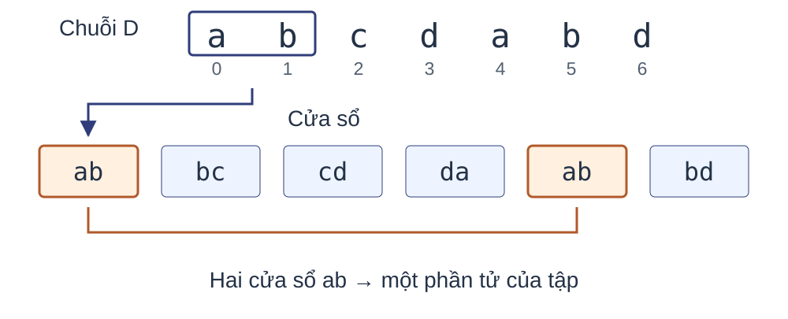
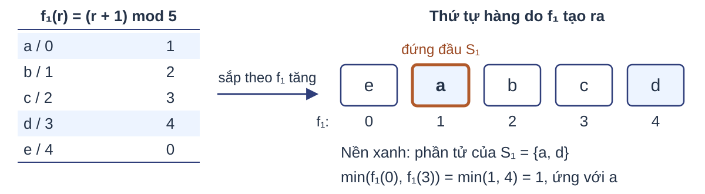

Biểu diễn tương đồng: Shingling và MinHash
Với hoán vị chọn đều, hai tập trùng MinHash với xác suất bằng Jaccard; chữ ký ngắn nhờ đó ước lượng được Jaccard.
Giải thuật nền tảng của Khoa học dữ liệu
Học kỳ 1 · Năm học 2026–2027
Trường Đại học Công nghệ · Đại học Quốc gia Hà Nội
Kho tài liệu có những bản gần trùng: trang phản chiếu, bản tin đăng lại, bài đạo văn. Bài 01 đã đặt bài toán tìm cặp gần trùng và đếm số cặp phải so khi xét mọi cặp. Kết quả trung tâm của bài cần hai giả thiết: hoán vị được chọn đều, và cùng một hoán vị dùng cho cả hai tập. Phạm vi gồm độ tương đồng Jaccard, shingling và MinHash. Chữ ký giảm chi phí so một cặp; số cặp vẫn tăng bậc hai và được xử lý ở Bài 06.
Nguồn: Mining of Massive Datasets (MMDS), ấn bản 3, Chương 3, §§3.1–3.3, tr. 73–91.
Tiên quyết và quy ước
Nhắc lại: xét mọi cặp cần \(\binom C2=C(C-1)/2\) phép so; \(C=10^6\) cho \(499\,999\,500\,000\) cặp (Bài 01).
Nhắc lại: Jaccard \(J(S,T)=|S\cap T|/|S\cup T|\) (Bài 01); ở đây viết \(\mathrm{SIM}(S,T)\).
Nhắc lại: \(\mathbb E\bigl[\sum_i X_i\bigr]=\sum_i\mathbb E[X_i]\), không cần độc lập (Bài 01).
Nhắc lại: biến chỉ báo có kỳ vọng \(p=\Pr[X=1]\), phương sai \(p(1-p)\).
Ký hiệu: \(C\) tài liệu (Bài 01 viết \(N\)) với các tập \(S_1,\ldots,S_C\).
Quy ước: vị trí, mã hàng đếm từ 0; dấu phẩy thập phân.
Bài 01 viết \(N\) tài liệu, \(C_i\) cho tập của tài liệu thứ \(i\), \(J(S,T)\) và ngưỡng \(\tau\); theo MMDS, ở đây \(C\) là số tài liệu, \(S_i\) là tập và \(\mathrm{SIM}(S,T)\) là cùng đại lượng Jaccard. Phép đếm cặp và con số \(499\,999\,500\,000\) được dùng lại ở ví dụ kho một triệu tài liệu và ở mạch tổng kết. Hạng của một phần tử trong hoán vị đếm từ 1, khác mã hàng. Tính tuyến tính của kỳ vọng cho kỳ vọng của ước lượng từ chữ ký mà không cần độc lập; phương sai của các biến chỉ báo chỉ được cộng lại khi thêm giả thiết độc lập. Các ký hiệu \(k\), \(S_k(D)\), \(R\), \(M\), \(h_\pi\), \(n\), \(\sigma\), \(f_i\), \(\mathrm{SIG}\) được định nghĩa tại chỗ dùng đầu tiên. Mã hàng \(0,\ldots,4\) là tên số của các phần tử \(a,\ldots,e\) trong ví dụ bốn tập đặc trưng.
Nguồn: Bài 01, các trang "Thuật toán: xét mọi cặp" và "Kỳ vọng số biến cố trùng"; MMDS 3e, §3.1.1, tr. 74.
Mục tiêu học tập
Tạo tập shingle của một chuỗi và tính Jaccard của hai tập. Chứng minh hai tập trùng MinHash với xác suất bằng Jaccard. Ước lượng Jaccard từ chữ ký; tính kỳ vọng và phương sai của ước lượng. Chạy phép quét hàng, nêu bất biến, đếm thời gian và bộ nhớ. Tách chi phí thành số cặp nhân chi phí một cặp; chỉ ra thừa số chữ ký giảm được. Mục tiêu 1 đòi liệt kê cửa sổ, lập tập phân biệt và đếm giao, hợp; câu hỏi về Jaccard, câu hỏi về shingling và Bài 3.1.1, 3.2.3 kiểm mục tiêu này. Mục tiêu 2 đòi lập luận qua ba loại hàng của một cặp cột; câu hỏi về MinHash và Bài 3.3.1 kiểm nó. Mục tiêu 3 đòi tính \(ns\) và \(s(1-s)/n\) và nêu giả thiết của từng công thức; câu hỏi về chữ ký và Bài 3.3.3(c) kiểm nó. Mục tiêu 4 đòi vết chạy, bất biến với ba bước khởi tạo, duy trì, kết thúc và bảng đếm thao tác; câu hỏi về tính chữ ký, Bài 3.3.2 và 3.3.3(a, b) kiểm nó. Mục tiêu 5 đòi tách tổng công việc thành số cặp nhân chi phí một cặp; câu hỏi tự kiểm tra cuối bài kiểm nó.
Nội dung
Tài liệu gần trùng và độ tương đồng Jaccard Shingling văn bản MinHash theo hoán vị Chữ ký MinHash Tính chữ ký bằng hàm băm Tổng kết và tự kiểm tra Bài tập vận dụng Đọc trước: Leskovec, Rajaraman, Ullman, Mining of Massive Datasets (MMDS), ấn bản 3, Chương 3, §§3.1–3.3, tr. 73–91.
Jaccard là đại lượng cần đo giữa hai tập. Shingling chuyển mỗi văn bản thành một tập để áp dụng đại lượng ấy. MinHash nối Jaccard với xác suất hai tập chọn cùng một phần tử; nhiều MinHash ghép thành chữ ký ngắn. Chữ ký được tính bằng hàm băm trên mã hàng thay cho hoán vị thật, trong một lượt quét. Tổng kết đặt mỗi kết quả cạnh giả thiết của nó và đối chiếu chữ ký với kho một triệu tài liệu: bộ nhớ đã giảm, số cặp vẫn bậc hai. Năm bài của MMDS kiểm lại các định nghĩa, định lý và thuật toán.
Vấn đề trung tâm
Nhu cầu: ước lượng Jaccard mọi cặp trong \(10^6\) tài liệu, vừa bộ nhớ.
Tập mã shingle gấp khoảng bốn lần tài liệu. Hoán vị đều: MinHash trùng với xác suất bằng Jaccard. Nhiều hoán vị: tỷ lệ trùng ước lượng Jaccard, không chệch. Hàm băm thay hoán vị; quét hàng một lượt. Bộ nhớ giảm; số cặp vẫn bậc hai. Quy mô \(10^6\) tài liệu lấy từ MMDS, tr. 73 và Ví dụ 3.10, tr. 92. Theo mở đầu §3.3, tập mã shingle gấp khoảng bốn lần tài liệu: tài liệu 50.000 byte cho tập mã khoảng 200.000 byte. Năm dòng theo thứ tự mạch 2 đến 6. Dòng MinHash cần hoán vị chọn đều và dùng chung cho hai tập. Dòng nhiều hoán vị cho ước lượng không chệch; với \(n\) hoán vị độc lập, sai số giảm theo \(1/\sqrt n\). Dòng hàm băm thay hoán vị thật bằng hàm băm trên mã hàng. Dòng cuối là giới hạn còn lại: chữ ký giảm chi phí mỗi cặp, số cặp vẫn là \(\binom C2\). Trang câu trả lời ở mạch tổng kết trả lời từng dòng theo cùng thứ tự bằng con số của kho một triệu tài liệu.
Nguồn: MMDS 3e, tr. 73, mở §3.3, tr. 81; Ví dụ 3.10, tr. 92.
Bài toán tài liệu gần trùng
Nhu cầu: nhận ra bản tin đăng lại có chèn thêm câu.
Đầu vào: kho văn bản lớn, như trang Web hoặc bản tin.
Đầu ra: các cặp tài liệu có nhiều văn bản chung.
Kết luận: so từng ký tự chỉ nhận ra hai tài liệu trùng hoàn toàn.
Bài 01 đã đặt bài toán tìm cặp gần trùng; ở đây phân ba kiểu gần trùng. Kho văn bản có ba kiểu gần trùng (mở đầu Chương 3, §3.1.2): trang phản chiếu khác thông tin máy chủ và liên kết; bản tin được nhiều nơi đăng lại, có cắt đoạn hoặc thêm nội dung; bài đạo văn đổi vài từ hoặc thứ tự câu. Hình là bản tin dựng để minh họa trường hợp thứ hai: bản đăng lại giữ nguyên hai câu của bản gốc và chèn một câu. Hai chuỗi khác nhau ngay từ ký tự đầu của câu thứ hai, nên phép so từng ký tự kết luận hai tài liệu khác nhau dù hai trong ba câu là chung. Bài toán cần một đại lượng đo lượng văn bản chung ở mức ký tự. Đại lượng ấy không đo mức giống nhau về ý nghĩa; tương đồng ngữ nghĩa cần kỹ thuật khác.
Nguồn: Mining of Massive Datasets (MMDS), ấn bản 3, Chương 3, tr. 73–76.
Ví dụ: kho một triệu tài liệu
Kho \(C=10^6\) tài liệu; giả định so một cặp mất 1 micro giây.
Tính số cặp và thời gian khi xét mọi cặp.
\[\binom C2=\frac{C(C-1)}2\]
Đại lượng Giá trị với \(C=10^6\) Số cặp \(499\,999\,500\,000\approx5\cdot10^{11}\) Thời gian \(\approx5\cdot10^{5}\) giây \(\approx5{,}8\) ngày
Kết luận: tổng công việc là số cặp nhân chi phí một cặp; biểu diễn ngắn giảm thừa số sau.
Số cặp đã được tính ở Bài 01; phần mới là thời gian và hai thừa số của tổng công việc. Mỗi tài liệu ghép với \(C-1\) tài liệu khác; tích \(C(C-1)\) đếm mỗi cặp hai lần nên chia 2. Với một triệu tài liệu, phép tính chính xác cho \(499\,999\,500\,000\). Ví dụ 3.10 giả định so một cặp chữ ký mất một micro giây: tổng thời gian là \(499\,999{,}5\) giây, gần sáu ngày trên một máy. So hai chữ ký tốn thời gian tỷ lệ với độ dài chữ ký \(n\); so trực tiếp hai văn bản tốn thời gian tỷ lệ với độ dài văn bản, nên với văn bản dài hơn nhiều so với \(n\), so trực tiếp thường tốn hơn con số này. Biểu diễn ngắn của bài này giảm thừa số thứ hai. Thừa số thứ nhất giữ bậc hai theo \(C\) cho tới khi có bước chọn cặp ứng viên ở Bài 06.
Nguồn: MMDS 3e, tr. 73; giả định 1 micro giây mỗi cặp chữ ký theo Ví dụ 3.10, tr. 92.
Độ tương đồng Jaccard
Biểu diễn mỗi tài liệu bằng một tập phần tử; phần văn bản chung ứng với giao của hai tập.
\[\begin{aligned}|S\cap T|&=3\\|S\cup T|&=2+3+3=8\end{aligned}\]
Định nghĩa. Độ tương đồng Jaccard của hai tập hữu hạn \(S,T\) với \(S\cup T\ne\varnothing\) là
\[\mathrm{SIM}(S,T)=\frac{|S\cap T|}{|S\cup T|}=\frac38\]
Ý nghĩa: \(0\le\mathrm{SIM}(S,T)\le1\); bằng 0 khi hai tập rời nhau, bằng 1 khi \(S=T\).
Chi phí một cặp phụ thuộc đại lượng được so; bài toán tài liệu gần trùng cần đại lượng đo phần văn bản chung, tính trên biểu diễn tập. Bài 01 đã tính \(J(S,T)=3/8\) trên Hình 3.1 cho hai tập không rỗng; định nghĩa ở đây cho mọi cặp tập hữu hạn có hợp khác rỗng và viết \(\mathrm{SIM}\) theo MMDS. Hình vẽ lại Hình 3.1: hai phần tử chỉ thuộc \(S\), ba phần tử thuộc cả hai tập, ba phần tử chỉ thuộc \(T\); diện tích vùng không biểu diễn số lượng. Hợp đếm mỗi phần tử một lần, nên \(|S\cup T|=8\); tổng \(|S|+|T|=5+6=11\) đếm ba phần tử giao hai lần. Kích thước giao một mình chưa đủ, vì ba phần tử chung trong hai tập nhỏ khác với ba phần tử chung trong hai tập rất lớn; do đó giao được chia cho kích thước hợp. Giao là tập con của hợp nên tỷ số không vượt 1; hai tập rời có tử số 0; khi \(S=T\ne\varnothing\), tử và mẫu bằng nhau. Nếu cả hai tập rỗng, biểu thức là \(0/0\), nên định nghĩa đòi hợp khác rỗng; các phát biểu MinHash phía sau dùng hai tập không rỗng.
Nguồn: MMDS 3e, §3.1.1, tr. 74; hình vẽ lại theo Hình 3.1, tr. 75.
Ứng dụng của độ tương đồng Jaccard
Mỗi đối tượng là một tập; ứng dụng quyết định phần tử của tập.
Ứng dụng Phần tử của tập Mức Jaccard có ý nghĩa Văn bản đoạn văn bản trang phản chiếu: trên 90% Khách hàng mặt hàng đã mua 20% đã gợi ý sở thích gần nhau
Kết luận: ý nghĩa của một giá trị Jaccard phụ thuộc cách chọn phần tử và ứng dụng.
Trong lọc cộng tác (§3.1.3), một khách hàng là tập mặt hàng đã mua, một mặt hàng là tập người đã mua nó. Sách dự đoán hai trang phản chiếu có Jaccard trên 90%, trong khi hai khách hàng hiếm khi đạt mức này; Jaccard 20% đã có thể đủ bất thường để xem hai người có sở thích tương tự. Vì vậy một ngưỡng tương đồng không chuyển nguyên từ ứng dụng này sang ứng dụng khác. Với văn bản, phần tử phải giữ dấu vết các đoạn chung; shingling xác định các phần tử ấy. Bài này chỉ xét tập hợp, mỗi phần tử xuất hiện một lần; biến thể đa tập của sách thuộc phần đọc thêm của tài liệu tự học.
Nguồn: MMDS 3e, §§3.1.2–3.1.3, tr. 74–76.
Câu hỏi về độ tương đồng Jaccard
Câu hỏi:
Thêm vào \(T\) hai phần tử mới, không thuộc \(S\). Tính lại \(\mathrm{SIM}(S,T)\). Một lời giải lấy mẫu số \(5+6\) và cho \(3/11\). Chỉ ra đại lượng bị đếm sai. Hai văn bản cùng dài 1000 ký tự. Giải thích vì sao dữ kiện này chưa xác định Jaccard. Câu 1 (định nghĩa Jaccard): giao vẫn có 3 phần tử, hợp có 10, nên \(\mathrm{SIM}=3/10\); giá trị giảm vì mẫu số tăng còn tử số giữ nguyên. Câu 2 (hợp đếm mỗi phần tử một lần): \(5+6\) là \(|S|+|T|\), đếm ba phần tử giao hai lần; mẫu số đúng là \(|S\cup T|=8\). Câu 3: độ dài chuỗi không cho biết phần tử nào thuộc giao hay hợp; cần quy tắc chuyển mỗi chuỗi thành một tập phần tử. Bài này dùng các đoạn con liên tiếp có độ dài cố định.
Nguồn: dữ kiện từ MMDS 3e, Hình 3.1, tr. 75.
2. Shingling văn bảnMuốn đo Jaccard giữa hai văn bản, phải biến mỗi văn bản thành tập các đoạn ký tự liên tiếp.
Tập shingle · Thuật toán tạo tập · Độ dài shingle · Khoảng trắng · Băm shingle
Jaccard đã được định nghĩa trên hai tập; bài toán tài liệu gần trùng cần so nội dung chứ không so từng ký tự. Mỗi tài liệu được biểu diễn bằng tập các \(k\)-shingle: ví dụ abcdabd với \(k=2\) dẫn tới định nghĩa tập shingle và thuật toán tạo tập; độ dài \(k\), khoảng trắng và phép băm mỗi 9-shingle thành mã 4 byte là các quyết định kèm theo. Số mã shingle vẫn gần bằng số ký tự của tài liệu, dẫn tới nhu cầu chữ ký ngắn.
Biểu diễn văn bản bằng tập shingle
Một \(k\)-shingle là đoạn \(k\) ký tự liên tiếp, nằm trong một cửa sổ dài \(k\).
Cửa sổ bắt đầu tại 0 1 2 3 4 5 abcdabdabbccddaabbdabcxabdabbccxxaabbd
Quy ước: \(k=2\); ô viền đậm là cửa sổ chứa vị trí 3.
Kết luận: đổi một ký tự chỉ đổi nhiều nhất \(k\) cửa sổ.
Hai chuỗi chỉ khác ở vị trí 3. Với \(k=2\), cửa sổ chứa vị trí 3 là các cửa sổ bắt đầu tại 2 và 3; bốn cửa sổ còn lại giống nhau. Tổng quát, thay ký tự ở vị trí \(i\) chỉ đổi những cửa sổ bắt đầu từ \(i-k+1\) đến \(i\), tức nhiều nhất \(k\) cửa sổ; mọi cửa sổ nằm trọn trong phần giữ nguyên vẫn chung cho hai phiên bản. Theo mở đầu §3.2, hai tài liệu chung những câu hoặc cụm từ ngắn có nhiều phần tử chung trong tập shingle, kể cả khi các câu ấy xuất hiện theo thứ tự khác, vì tập không ghi vị trí. Shingle giữ thứ tự ký tự bên trong mỗi đoạn con, còn tập shingle không giữ toàn bộ thứ tự tài liệu hay số lần xuất hiện.
Nguồn: MMDS 3e, mở §3.2 và §3.2.1, tr. 78; abcxabd đổi một ký tự của Ví dụ 3.3.
Ví dụ: tập 2-shingle của abcdabd
\[D=\texttt{abcdabd},\qquad k=2\]
Liệt kê các cửa sổ và tập các shingle phân biệt.

\[S_2(D)=\{\texttt{ab},\texttt{bc},\texttt{cd},\texttt{da},\texttt{bd}\}\]
Kết luận: sáu cửa sổ cho năm phần tử vì ab lặp lại.
Chuỗi có bảy ký tự và sáu vị trí bắt đầu cho cửa sổ hai ký tự. Cửa sổ đầu và cửa sổ thứ năm cùng là ab, nên phép chèn vào tập ở lần thứ năm không tăng kích thước tập. Kết quả có năm phần tử phân biệt. Thứ tự liệt kê trong tập không biểu thị thứ tự xuất hiện.
Nguồn: MMDS 3e, Ví dụ 3.3, tr. 78.
Định nghĩa tập shingle
Định nghĩa. Với chuỗi \(D\) dài \(\ell\) và số nguyên \(k\ge1\), tập \(k\)-shingle của \(D\) là
\[S_k(D)=\{D[i:i+k]:0\le i\le\ell-k\}\]
\(D[i:i+k]\) chứa các vị trí \(i,\ldots,i+k-1\); chỉ số bắt đầu từ \(0\).
Với \(D=\texttt{abcdabd}\): \(\ell=7\), \(k=2\), \(i=0,\ldots,5\); \(D[3:5]=\texttt{da}\).
Trường hợp biên: nếu \(\ell<k\), không có cửa sổ hợp lệ và \(S_k(D)=\varnothing\).
Có \(\ell-k+1\) vị trí hợp lệ khi \(k\le\ell\); với \(\ell=7\), \(k=2\), đó là sáu vị trí 0 đến 5. Đoạn \(D[3:5]\) lấy vị trí 3 và 4, tức d và a. Một phần tử của tập là chuỗi con, không phải chỉ số vị trí. Nếu tài liệu ngắn hơn \(k\), không có vị trí bắt đầu hợp lệ; trường hợp này cần được tách trước khi dùng định lý MinHash cho tập không rỗng.
Nguồn: MMDS 3e, §3.2.1; hình thức hóa chỉ số theo định nghĩa nguồn.
Thuật toán: tạo tập shingle
Đầu vào: chuỗi \(D\) dài \(\ell\); số nguyên \(k\ge1\).
Đầu ra: \(S_k(D)\).
S ← ∅
for i = 0, …, ℓ − k:
chèn D[i:i+k] vào S
return SBất biến: sau \(t\) lần lặp,
\[S=\{D[j:j+k]:0\le j<t\}\]
Điều kiện dừng: sau \(w=\max(0,\ell-k+1)\) lần lặp.
Mỗi cửa sổ: tạo và chèn vào tập băm khóa dài \(k\) tốn \(O(k)\) kỳ vọng; tổng \(O(1+wk)\) kỳ vọng.
Khi \(t=0\), hai vế của bất biến đều rỗng. Mỗi lần lặp thêm đúng cửa sổ bắt đầu tại \(t\); phép chèn vào tập giữ một bản của chuỗi trùng, nên bất biến được giữ. Sau \(w\) lần lặp, vế phải trùng với định nghĩa \(S_k(D)\); khi \(\ell<k\), miền lặp rỗng nên kết quả là \(\varnothing\). Tạo và băm một đoạn \(k\) ký tự tốn \(O(k)\); với tập băm có thao tác chèn kỳ vọng tỷ lệ với độ dài khóa, tổng là \(O(1+wk)\) kỳ vọng. Bộ nhớ lưu các chuỗi phân biệt là \(O(k|S|)\), chưa kể đầu vào. Hệ số \(k\) không bỏ được khi \(k\) là tham số thay đổi.
Nguồn: Suy ra từ MMDS 3e, §3.2.1, với mô hình chèn vào tập băm.
Chọn độ dài shingle
Với \(k=1\), hầu hết trang Web chứa hầu hết ký tự thông dụng, nên gần như mọi cặp có Jaccard cao.
26 chữ cái và dấu cách cho \(27^5=14\,348\,907\) chuỗi dài 5, nhiều hơn một thư điện tử.
Tài liệu \(k\) theo nguồn Thư điện tử \(k=5\) Tài liệu dài \(k=9\)
Kết luận: chọn \(k\) để shingle ít gặp trong một tài liệu; 5, 9 là quy tắc kinh nghiệm.
Nếu \(k\) quá nhỏ, phần lớn chuỗi \(k\) ký tự xuất hiện trong phần lớn tài liệu, nên hai tài liệu không chung câu nào vẫn có Jaccard cao. Với 26 chữ cái và một ký tự trắng, có \(27^5\) chuỗi dài 5, lớn hơn nhiều độ dài một thư điện tử thông thường. Ký tự không phân bố đều: chữ thông dụng và dấu cách chiếm ưu thế, nên sách đề nghị ước lượng số shingle thực tế bằng \(20^k\) thay cho \(27^k\). Tiêu chí của sách là chọn \(k\) đủ lớn để một shingle cho trước ít có khả năng xuất hiện trong một tài liệu cho trước. Giá trị 5 và 9 là quy tắc kinh nghiệm theo kiểu và độ dài tài liệu, không phải ngưỡng có chứng minh.
Nguồn: MMDS 3e, §3.2.2, tr. 79.
Xử lý khoảng trắng
Hai câu khác nội dung: …ready for touch down, …scored a touchdown.
Quy ước: \(k=9\); mỗi dãy ký tự trắng thành một dấu cách, và dấu cách là một ký tự.
Chuỗi Độ dài Các cửa sổ touch down10 touch dow, ouch downtouchdown9 touchdown
Kết luận: nếu xóa hết khoảng trắng, hai câu khác nội dung chung shingle touchdown.
Hai câu của Ví dụ 3.4 là “The plane was ready for touch down” và “The quarterback scored a touchdown”. Khi giữ dấu cách, câu đầu có touch dow, ouch down, câu sau có touchdown, nên hai tập không chung các shingle này. Khi xóa khoảng trắng, hai câu có shingle chung dù nội dung khác nhau. Thay một dãy ký tự trắng bằng một dấu cách vẫn phân biệt shingle phủ hai từ với shingle nằm trong một từ, đồng thời bỏ khác biệt về số dấu cách, tab hay xuống dòng. Quy tắc phải áp dụng giống nhau cho toàn bộ kho trước khi tạo shingle.
Nguồn: MMDS 3e, Ví dụ 3.4, tr. 78.
Băm shingle
Băm mỗi 9-shingle vào \(2^{32}\) thùng; số thùng 4 byte thay chuỗi.
Phần tử Dung lượng Số giá trị khả dĩ 4-shingle 4 byte \(\approx20^4=160\,000\) (20 ký tự thông dụng) Mã của 9-shingle 4 byte gần \(2^{32}\)
Lưu ý: va chạm (collision) là hai shingle khác nhau cùng mã; Jaccard có thể đổi.
Kết luận: cùng 4 byte, mã 9-shingle phân biệt tài liệu tốt hơn 4-shingle.
Theo §3.2.3, thay vì dùng chuỗi con làm phần tử, chọn một hàm băm ánh xạ chuỗi dài \(k\) vào các thùng và dùng số thùng làm phần tử. Với 9-shingle và \(2^{32}\) thùng, mỗi phần tử chiếm 4 byte thay vì 9 và được xử lý bằng phép toán trên một từ máy; độ dài shingle vẫn là \(k=9\). Nếu dùng trực tiếp 4-shingle, mỗi phần tử cũng chiếm 4 byte, nhưng với khoảng 20 ký tự thông dụng chỉ có cỡ \(20^4\) chuỗi có khả năng xuất hiện, nên tài liệu không liên quan dễ chung phần tử. Số 9-shingle có khả năng xuất hiện vượt xa \(2^{32}\); sau khi băm, gần như mọi mã 4 byte đều có thể gặp. Va chạm gộp hai shingle khác nhau thành một mã. MinHash làm việc trên tập mã đã chọn và không khôi phục sai lệch do va chạm.
Nguồn: MMDS 3e, §3.2.3, tr. 79–80.
Câu hỏi về shingling
Câu hỏi:
Với abcdabd và \(k=3\), liệt kê các cửa sổ và tập \(S_3(D)\). Chuỗi abcdabc chỉ khác abcdabd ở ký tự cuối. Với \(k=2\), tính Jaccard của hai tập shingle. Tài liệu 50.000 ký tự, \(k=9\), mã 4 byte, không cửa sổ nào trùng mã: tính số mã và số byte. Câu 1: có \(\ell-k+1=5\) cửa sổ abc, bcd, cda, dab, abd; cả năm khác nhau nên \(|S_3(D)|=5\). Câu 2: abcdabc có các cửa sổ ab, bc, cd, da, ab, bc, nên tập là \(\{\texttt{ab},\texttt{bc},\texttt{cd},\texttt{da}\}\). Giao với \(S_2(D)\) có 4 phần tử, hợp có 5 (thêm bd), nên Jaccard bằng \(4/5\). Ký tự cuối chỉ thuộc một cửa sổ, nên thay nó chỉ đổi một cửa sổ. Câu 3: có \(w=50\,000-9+1=49\,992\) cửa sổ, nên tập có \(49\,992\) mã và chiếm \(199\,968\) byte, cỡ bốn lần dung lượng tài liệu. Bỏ giả thiết không trùng mã thì \(49\,992\) chỉ là cận trên; cửa sổ lặp hoặc va chạm làm tập nhỏ hơn.
Nguồn: dữ kiện từ MMDS 3e, Ví dụ 3.3, §3.2.3 và mở §3.3; chuỗi abcdabc là biến thể của Ví dụ 3.3, đổi ký tự cuối.
3. MinHash theo hoán vịMuốn thay mỗi tập bằng một đại lượng ngắn, phải tìm giá trị mà xác suất trùng bằng Jaccard.
Ma trận đặc trưng · Hoán vị hàng · Ba loại hàng · Xác suất trùng
Tập mã shingle của tài liệu 50.000 byte vẫn chiếm khoảng 200.000 byte. Các tập được xếp thành cột của ma trận đặc trưng; MinHash là phần tử đứng đầu của tập theo một hoán vị hàng, tính được trên ví dụ bốn tập; ba loại hàng của một cặp cột cho phép chứng minh xác suất hai MinHash trùng bằng độ tương đồng Jaccard. Một MinHash chỉ cho trùng hoặc không trùng; nhiều MinHash được ghép lại thành chữ ký.
Kích thước tập shingle
Nhu cầu: thay mỗi tập bằng chữ ký dài cố định, vẫn ước lượng được Jaccard.
\[|S_k(D)|\le w=\max(0,\ell-k+1)\]
Băm làm mỗi phần tử còn 4 byte; số phần tử vẫn gần bằng số ký tự.
Biểu diễn trong ví dụ nguồn Dung lượng Tài liệu 50.000 byte Tập mã shingle, mỗi mã 4 byte Khoảng 200.000 byte
Shingling và phép băm cho mỗi tài liệu một tập mã 4 byte; giới hạn còn lại là số phần tử của tập. Mỗi cửa sổ tạo nhiều nhất một phần tử, nên tập shingle có không quá \(w\) phần tử, và va chạm khi băm chỉ có thể làm số mã ít đi. Mở đầu §3.3, sách nêu rằng ngay cả khi băm thành 4 byte, tập shingle vẫn chiếm khoảng bốn lần dung lượng tài liệu; tài liệu 50.000 byte cho tập mã khoảng 200.000 byte, chưa tính chi phí cấu trúc lưu trữ. Với hàng triệu tài liệu, các tập này có thể không vừa bộ nhớ chính. Chữ ký cần có độ dài chọn trước, không phụ thuộc độ dài tài liệu, và cho phép ước lượng Jaccard chỉ từ hai chữ ký.
Nguồn: MMDS 3e, mở §3.3, tr. 81; cận số phần tử từ §3.2.1.
Ma trận đặc trưng của bốn tập
Phần tử / \(r\) \(S_1\) \(S_2\) \(S_3\) \(S_4\) a / 0 1 0 0 1 b / 1 0 0 1 0 c / 2 0 1 0 1 d / 3 1 0 1 1 e / 4 0 0 1 0
\(U=\{a,b,c,d,e\}\); \(R=5\) hàng, \(C=4\) cột.
Định nghĩa. Ma trận đặc trưng (characteristic matrix) là \(M\) với \(M(r,c)=1\) khi phần tử hàng \(r\) thuộc \(S_c\), \(0\) nếu không.
Lưu ý: dữ liệu thực rất thưa; chỉ lưu vị trí các ô 1.
Kết luận: hàng là phần tử, cột là tập; cột \(S_1\) có 1 ở hàng \(a\), \(d\).
Theo §3.3.1, ma trận đặc trưng là cách hình dung một họ tập: cột ứng với tập, hàng ứng với phần tử của vũ trụ. Bốn cột là \(S_1=\{a,d\}\), \(S_2=\{c\}\), \(S_3=\{b,d,e\}\), \(S_4=\{a,c,d\}\), gọi là ví dụ bốn tập đặc trưng; hàng \(a\) có 1 ở cột 1 và 4 vì \(a\) thuộc hai tập này. Mã hàng \(r=0,\ldots,4\) là tên số của \(a,\ldots,e\), được dùng lại khi băm các hàng ở phần tính chữ ký. Trong dữ liệu thực, số 0 chiếm áp đảo nên dữ liệu được lưu bằng vị trí các ô 1, chẳng hạn danh sách các cột có 1 của mỗi hàng; ví dụ này có 9 ô 1 trong 20 ô. Trên ma trận, một thứ tự của \(U\) ứng với một hoán vị các hàng; phép chọn đại diện của MinHash dùng biểu diễn này.
Nguồn: MMDS 3e, §3.3.1, Hình 3.2, tr. 81–82.
Ý tưởng của MinHash
Nhu cầu: đại diện mỗi tập bằng một phần tử, chọn theo cùng quy tắc cho mọi tập.
Xếp \(U\) theo một thứ tự chung cho mọi tập. Mỗi tập không rỗng giữ phần tử đứng đầu của nó. Kết luận: hai tập chọn cùng phần tử khi và chỉ khi phần tử đầu của hợp thuộc giao.
Chữ ký cần ngắn và vẫn giữ liên hệ với Jaccard; hình dùng ví dụ bốn tập đặc trưng. MinHash thay cả tập bằng một phần tử đại diện, chọn bằng cùng một quy tắc: xếp \(U\) theo một thứ tự rồi lấy phần tử đứng đầu của tập. Với hai tập, phần tử ngoài hợp không thuộc tập nào nên không thể được chọn. Nếu phần tử đầu của hợp thuộc giao, nó cũng đứng đầu từng tập. Nếu nó chỉ thuộc một tập, tập đó chọn nó còn tập kia chọn phần tử khác. Khi thứ tự được chọn ngẫu nhiên, giao càng lớn so với hợp thì hai tập càng dễ chọn trùng; định lý xác suất trùng lượng hóa quan hệ này.
Nguồn: MMDS 3e, §3.3.2–§3.3.3, tr. 82–83.
Ví dụ: bốn tập đặc trưng, một hoán vị
Thứ tự hàng \((b,e,a,d,c)\); xác định ô 1 đầu tiên của mỗi cột.
Thứ tự hàng \(S_1\) \(S_2\) \(S_3\) \(S_4\) b 0 0 1 0 e 0 0 1 0 a 1 0 0 1 d 1 0 1 1 c 0 1 0 1
Đại lượng \(S_1\) \(S_2\) \(S_3\) \(S_4\) Định danh a c b a Vị trí (từ 1) 3 5 1 3
Kết luận: \(S_1\), \(S_4\) cùng chọn \(a\); giá trị MinHash là định danh, không là vị trí.
Ô viền đậm, chữ đậm là ô 1 đầu tiên của mỗi cột. \(S_1\) không chứa b, e nên gặp a đầu tiên ở vị trí thứ ba. \(S_2\) chỉ chứa c nên gặp ở vị trí thứ năm. \(S_3\) chứa b nên dừng ngay tại vị trí thứ nhất. \(S_4\) gặp a trước c, d nên cũng chọn a. Định danh a và vị trí 3 là hai đại lượng khác nhau; giá trị MinHash là định danh, còn vị trí chỉ cho biết phép quét dừng ở hàng nào.
Nguồn: MMDS 3e, Ví dụ 3.7, Hình 3.3, tr. 82–83; bổ sung bảng đối chiếu định danh và vị trí.
Định nghĩa MinHash
Giả thiết: \(U\) hữu hạn, \(S\subseteq U\), \(S\ne\varnothing\); \(\pi\) là một hoán vị của \(U\).
Định nghĩa. \(\operatorname{rank}_\pi(u)\) là vị trí, đếm từ 1, của \(u\) trong \(\pi\); MinHash của \(S\) là
\[h_\pi(S)=\arg\min_{u\in S}\operatorname{rank}_\pi(u)\]
Với \(\pi=(b,e,a,d,c)\): \(h_\pi(S_1)=a\), còn \(\operatorname{rank}_\pi(a)=3\).
Lưu ý: cùng \(\pi\) cho mọi tập; các hạng khác nhau nên phần tử đạt hạng nhỏ nhất là duy nhất.
Hàm \(h_\pi\) nhận một tập và trả một phần tử của \(U\); \(\arg\min\) trả phần tử đạt hạng nhỏ nhất, không trả giá trị hạng. Điều kiện \(S\ne\varnothing\) bảo đảm có phần tử để chọn; hoán vị gán các hạng khác nhau nên không có hai phần tử cùng đạt cực tiểu. MinHash là định danh phần tử, không phải hạng: trong ví dụ, \(h_\pi(S_1)=a\) còn hạng của \(a\) là 3. Nếu lưu hạng thay định danh, quan hệ hai giá trị bằng nhau vẫn giữ vì hạng và định danh tương ứng một-một. Định lý xác suất trùng chọn \(\pi\) đều từ \(R!\) hoán vị.
Nguồn: MMDS 3e, §3.3.2–§3.3.3; quy ước trả định danh tương đương về phép so bằng.
Ba loại hàng của một cặp cột
Loại hàng Hai cột \(X\) \((1,1)\) \(Y\) \((1,0)\) hoặc \((0,1)\) \(Z\) \((0,0)\)
\(x\), \(y\) là số hàng loại \(X\), \(Y\): \(x=|S\cap T|\), \(x+y=|S\cup T|\).
Ví dụ. Cặp \(S_1,S_4\): \(x=2\), \(y=1\).
Những hàng \(Z\) không chứa phần tử của hai tập nên bỏ chúng khỏi thứ tự không làm đổi phần tử được chọn. Hàng đầu tiên khác \(Z\) thuộc \(X\) thì cả hai cột chọn cùng hàng; thuộc \(Y\) thì chỉ một cột có phần tử đó. Biến \(x\) đếm số hàng, không phải chỉ số của một hàng.
Nguồn: MMDS 3e, §3.3.3, tr. 83.
Định lý xác suất trùng MinHash
Định lý. \(S,T\subseteq U\) không rỗng; cùng \(\pi\) chọn đều trong \(R!\) hoán vị. Khi đó
\[\Pr[h_\pi(S)=h_\pi(T)]=\mathrm{SIM}(S,T)\]
Chứng minh. Phần tử đầu \(u\) của \(S\cup T\) theo \(\pi\) phân bố đều trên \(S\cup T\).
Hai MinHash trùng khi và chỉ khi \(u\in S\cap T\), nên
\[\Pr[h_\pi(S)=h_\pi(T)]=\Pr[u\in S\cap T]=\frac{x}{x+y}\]
Gọi \(u\) là phần tử đầu của hợp. Tính đối xứng của hoán vị đều cho mỗi phần tử của hợp cùng xác suất đứng đầu. Nếu \(u\) thuộc giao, \(u\) đứng đầu cả hai tập. Nếu \(u\) nằm trong phần riêng, chỉ một tập chọn \(u\), còn tập kia chọn một phần tử khác. Vậy biến cố trùng tương đương \(u\) thuộc giao. Có \(x\) phần tử thuận lợi trong \(x+y\) phần tử của hợp, nên xác suất bằng \(x/(x+y)\), đúng Jaccard. Phần tử ngoài hợp không ảnh hưởng lập luận.
Nguồn: MMDS 3e, §3.3.3, tr. 83.
Câu hỏi về MinHash
\[S_1=\{a,d\},\qquad S_4=\{a,c,d\},\qquad U=\{a,b,c,d,e\}\]
Câu hỏi:
Nêu một thứ tự của \(U\) làm \(h_\pi(S_1)\ne h_\pi(S_4)\); chỉ ra phần tử đứng đầu hợp. Đặt \(S_1'=S_1\cup\{e\}\). Tính \(\Pr[h_\pi(S_1')=h_\pi(S_4)]\) khi \(\pi\) chọn đều. Giải thích vì sao vị trí của \(c\) không ảnh hưởng tới biến cố \(h_\pi(S_1)=h_\pi(S_3)\), với \(S_3=\{b,d,e\}\). Câu 1: cần \(c\) đứng trước cả \(a\) và \(d\), chẳng hạn \((c,a,b,d,e)\); khi đó \(h_\pi(S_1)=a\) còn \(h_\pi(S_4)=c\). Phần tử đứng đầu hợp \(\{a,c,d\}\) là \(c\), thuộc phần riêng của \(S_4\). Câu 2: \(S_1'\cap S_4=\{a,d\}\), \(S_1'\cup S_4=\{a,c,d,e\}\), nên xác suất bằng \(2/4=1/2\); thêm \(e\) làm hợp lớn hơn mà giao giữ nguyên. Câu 3: \(S_1\cup S_3=\{a,b,d,e\}\) không chứa \(c\), nên với cặp này \(c\) là hàng loại \(Z\); phần tử ngoài hợp không thể được chọn, nên vị trí của nó không đổi phần tử đầu của hợp.
Nguồn: dữ kiện từ MMDS 3e, Hình 3.2 và §3.3.3; tập \(S_1'\) là biến thể của \(S_1\).
4. Chữ ký MinHashMuốn ước lượng Jaccard đủ chính xác, phải lặp MinHash với nhiều hoán vị và đếm tỷ lệ trùng.
Ma trận chữ ký · Tỷ lệ trùng · Kỳ vọng · Phương sai · Chi phí so sánh
Định lý xác suất trùng cho một phép thử với kết quả trùng hoặc không trùng. Chữ ký gồm \(n\) MinHash theo cùng bộ hoán vị; tỷ lệ tọa độ trùng ước lượng Jaccard không chệch, phương sai tính được khi các hoán vị độc lập, và so hai chữ ký tốn \(\Theta(n)\) phép so bằng. Mô hình vẫn cần \(n\) hoán vị thật của hàng triệu hàng, nên cần thay hoán vị bằng hàm băm.
Ví dụ: bốn tập đặc trưng, hai thứ tự
Nhu cầu: một MinHash chỉ cho kết quả trùng hoặc không trùng.
\(S_1=\{a,d\}\), \(S_2=\{c\}\), \(S_3=\{b,d,e\}\), \(S_4=\{a,c,d\}\); xác định MinHash theo hai thứ tự.
Thứ tự \(S_1\) \(S_2\) \(S_3\) \(S_4\) \(\pi_1=(e,a,b,c,d)\) a c e a \(\pi_2=(d,a,c,e,b)\) d c d d
Kết luận: \(S_1\), \(S_4\) trùng ở cả hai thứ tự, trong khi \(\mathrm{SIM}(S_1,S_4)=2/3\).
Hai thứ tự này được suy trực tiếp bằng cách sắp hàng theo hai hàm băm của Ví dụ 3.8. Ở đây chỉ dùng thứ tự và định danh phần tử; giá trị băm xuất hiện khi hoán vị được thay bằng hàm băm. Chữ ký của \(S_1\), \(S_2\), \(S_3\), \(S_4\) lần lượt là (a, d), (c, c), (e, d), (a, d). Cặp 1–4 trùng cả hai tọa độ, chữ ký chung là \((a,d)^{\mathsf T}\), dù hai tập khác nhau. Hai thứ tự cố định minh họa phép tính, không cung cấp bằng chứng về phân phối chọn đều.
Nguồn: MMDS 3e, Hình 3.2 và hai thứ tự suy từ Ví dụ 3.8, tr. 85–86.
Định nghĩa chữ ký MinHash
Định nghĩa. Với \(\pi_1,\ldots,\pi_n\) dùng chung cho mọi tập, chữ ký MinHash (MinHash signature) của \(S\) là
\[\sigma(S)=\bigl(h_{\pi_1}(S),\ldots,h_{\pi_n}(S)\bigr)^{\mathsf T}\]
Ma trận Hàng Cột Đặc trưng \(R\) phần tử \(C\) tập Chữ ký \(n\) phép thử \(C\) tập
Giả thiết: mỗi hoán vị được chọn đều; cùng bộ hoán vị cho mọi tập.
Ở ma trận đặc trưng, hàng biểu diễn phần tử của \(U\); ở ma trận chữ ký, hàng biểu diễn một phép chọn MinHash. Số cột vẫn là \(C\) vì mỗi cột vẫn ứng với một tập. Ví dụ bốn tập đặc trưng có \(n=2\), \(C=4\); ma trận gốc có \(R=5\). Sách gợi ý \(n\) khoảng 100 đến vài trăm, trong khi \(R\) là số shingle khác nhau của cả kho. Số hàng giảm chưa tự chứng minh giảm byte vì kiểu giá trị của hai ma trận có thể khác nhau.
Nguồn: MMDS 3e, §3.3.4, tr. 83–84.
Ước lượng Jaccard từ chữ ký
Định nghĩa. Ước lượng Jaccard là tỷ lệ tọa độ trùng:
\[\widehat{\mathrm{SIM}}(S,T)=\frac1n\sum_{i=1}^n\mathbf1\{h_{\pi_i}(S)=h_{\pi_i}(T)\}\]
\(\mathbf1\{E\}\) là 1 khi \(E\) đúng, là 0 khi sai; so cùng chỉ số \(i\).
\(S_2=\{c\}\), \(S_4=\{a,c,d\}\)
\(\pi_1=(e,a,b,c,d)\)
\(\pi_2=(d,a,c,e,b)\)
Tọa độ \(\sigma(S_2)\) \(\sigma(S_4)\) Chỉ báo 1 c a \(c\ne a\Rightarrow0\) 2 c d \(c\ne d\Rightarrow0\)
\[\widehat{\mathrm{SIM}}(S_2,S_4)=\frac{0+0}{2}=0\ne\frac13=\mathrm{SIM}(S_2,S_4)\]
Khi cặp đã rõ, ước lượng viết gọn là \(\widehat s\); tọa độ \(i\) của chữ ký là hàng \(i\) của ma trận chữ ký. Với hai thứ tự \(\pi_1,\pi_2\), \(S_2\) chỉ có \(c\) nên \(\sigma(S_2)=(c,c)^{\mathsf T}\), còn \(S_4\) gặp \(a\) trước theo \(\pi_1\) và \(d\) trước theo \(\pi_2\), nên \(\sigma(S_4)=(a,d)^{\mathsf T}\). Không tọa độ nào trùng nên ước lượng bằng 0, trong khi \(S_2\cap S_4=\{c\}\) và \(S_2\cup S_4=\{a,c,d\}\) cho Jaccard \(1/3\). Cùng hai thứ tự, cặp \(S_1,S_4\) cho ước lượng 1 so với \(2/3\): với \(n\) nhỏ, ước lượng có thể lệch về cả hai phía. Chữ ký là vector có thứ tự, nên tọa độ \(i\) chỉ so với tọa độ \(i\) được tạo bởi cùng hoán vị. Lấy Jaccard giữa hai tập giá trị chữ ký sẽ bỏ vị trí và không còn đếm các biến cố của định lý. Dấu mũ phân biệt ước lượng từ \(n\) phép thử với \(\mathrm{SIM}\) của hai tập gốc.
Nguồn: MMDS 3e, §3.3.4, tr. 84.
Kỳ vọng của ước lượng
Đặt \(s=\mathrm{SIM}(S,T)\) và \(X_i=\mathbf1\{h_{\pi_i}(S)=h_{\pi_i}(T)\}\).
Mệnh đề. Khi mỗi \(\pi_i\) được chọn đều, định lý MinHash cho:
\[\mathbb E[X_i]=\Pr[X_i=1]=s\]
Số tọa độ trùng
\[\mathbb E\!\left[\sum_{i=1}^nX_i\right]=ns\]
Tỷ lệ tọa độ trùng
\[\mathbb E[\widehat{\mathrm{SIM}}]=s\]
Kết luận: ước lượng không chệch; tính tuyến tính của kỳ vọng không cần các hoán vị độc lập.
Mỗi chỉ báo nhận 1 với xác suất \(s\) theo định lý MinHash, nên kỳ vọng của nó là \(s\). Tuyến tính kỳ vọng cho tổng \(ns\); chia cho \(n\) được tỷ lệ kỳ vọng \(s\). Kỳ vọng không khẳng định tổng quan sát ở mọi lần bằng \(ns\) và có thể không nguyên. Phân biệt này hiệu chỉnh đơn vị của câu ở tr. 84 của sách: số hàng trùng và tỷ lệ hàng trùng là hai đại lượng khác nhau.
Nguồn: MMDS 3e, §3.3.4; tính tuyến tính của kỳ vọng. Phân biệt số đếm và tỷ lệ.
Phương sai của ước lượng
Mệnh đề. Thêm giả thiết các hoán vị độc lập. Khi đó \(\operatorname{Var}(\widehat{\mathrm{SIM}})=s(1-s)/n\).
Chứng minh. Các \(X_i\) là biến Bernoulli độc lập, \(\operatorname{Var}(X_i)=s(1-s)\):
\[\begin{aligned}\operatorname{Var}(\widehat{\mathrm{SIM}})&=\frac1{n^2}\operatorname{Var}\!\left(\sum_{i=1}^nX_i\right)\\&=\frac1{n^2}\sum_{i=1}^n\operatorname{Var}(X_i)=\frac{s(1-s)}n.\end{aligned}\]
Ý nghĩa: độ lệch chuẩn \(\sqrt{s(1-s)/n}\); giảm một nửa cần \(n\) gấp bốn.
\(X_i\) là biến Bernoulli với tham số \(s\), có phương sai \(s(1-s)\). Do độc lập, phương sai của tổng bằng tổng các phương sai. Hệ số \(1/n\) của trung bình được bình phương khi đưa ra ngoài phương sai, nên kết quả là \(ns(1-s)/n^2\). Nếu các phép thử phụ thuộc, phải xét các hiệp phương sai và công thức này không tự áp dụng. Công thức nói về phân phối của ước lượng; không bảo đảm mỗi lần tăng độ dài chữ ký đều làm sai số quan sát giảm. Đẳng thức thứ hai dùng độc lập.
Nguồn: suy ra từ mô hình §3.3.4 bằng phương sai của biến chỉ báo độc lập (hệ quả, không trích nguyên văn sách).
Chi phí: so sánh chữ ký
Mô hình: mỗi thành phần vừa một từ máy; một phép so bằng tốn \(O(1)\).
Bước Số lần Chi phí mỗi lần Đóng góp So một cặp chữ ký \(1\) \(n\) phép so \(\Theta(n)\) So mọi cặp trong kho \(C(C-1)/2\) \(n\) phép so \(nC(C-1)/2\) phép so
Kết luận: chữ ký giảm chi phí mỗi cặp; số cặp vẫn tăng bậc hai.
Trong mô hình mỗi thành phần vừa một từ máy, so bằng tốn \(O(1)\). Ước lượng duyệt tất cả \(n\) tọa độ, đếm các vị trí bằng nhau rồi chia cho \(n\); chi phí này không phụ thuộc độ dài tài liệu. Chữ ký được xây một lần và dùng lại cho nhiều cặp; chi phí xây được phân tích riêng. Phép đếm mọi cặp vẫn mang thừa số \(C(C-1)/2\) từ đầu bài. Tăng \(n\) vừa giảm phương sai trong mô hình lý tưởng vừa tăng công việc so sánh.
Nguồn: Suy ra từ §3.3.4 và phép đếm cặp ở mở Chương 3.
Câu hỏi về chữ ký MinHash
Cặp \(S_1,S_4\) có \(s=2/3\). Các hoán vị chọn đều và độc lập.
Câu hỏi:
Với \(n=100\), tính kỳ vọng số tọa độ trùng. Với \(n=100\), tính độ lệch chuẩn của \(\widehat{\mathrm{SIM}}(S_1,S_4)\). Xác định \(n\) nhỏ nhất để độ lệch chuẩn không vượt \(0{,}02\); nêu số phép so bằng cho cặp này. Câu 1: \(ns=100\cdot2/3=200/3\); kỳ vọng của một số đếm có thể không nguyên. Câu 2: \(s(1-s)=2/9\), nên phương sai là \(2/(9\cdot100)=1/450\) và độ lệch chuẩn \(\sqrt{1/450}\approx0{,}047\). Câu 3: cần \(\sqrt{2/(9n)}\le0{,}02\), tức \(n\ge(2/9)/0{,}0004\approx555{,}6\), nên \(n=556\); so một cặp cần 556 phép so bằng. Giảm độ lệch chuẩn từ khoảng \(0{,}047\) xuống \(0{,}02\) làm số tọa độ tăng hơn năm lần. Kết luận về độ lệch chuẩn là phát biểu trên phân phối; một chữ ký dài hơn trong một lần chạy cụ thể không bảo đảm sai số nhỏ hơn.
Nguồn: dữ kiện từ MMDS 3e, Hình 3.2; áp dụng mô hình chữ ký §3.3.4.
5. Tính chữ ký bằng hàm bămMuốn tính chữ ký khi có hàng triệu hàng, phải thay hoán vị bằng hàm băm và quét mỗi hàng một lần.
Hàm băm hàng · Quét hàng · Tính đúng · Chi phí và bộ nhớ · Điều kiện hàm băm
Chữ ký và ước lượng không chệch đã có dưới giả thiết hoán vị đều, độc lập. Mỗi hoán vị được thay bằng một hàm băm trên mã hàng; ma trận \(\mathrm{SIG}\) được đặc tả và phép quét chạy tay với hai hàm băm trên năm hàng; thuật toán quét hàng đi kèm chứng minh tính đúng, chi phí thời gian, bộ nhớ và điều kiện để \((ar+b)\bmod R\) là hoán vị. Ma trận \(\mathrm{SIG}\) là đầu vào của bảng tổng kết và của Bài 06.
Mô phỏng hoán vị bằng hàm băm
Nhu cầu: sắp lại hàng triệu hàng theo \(n\) hoán vị tốn nhiều thời gian.
Tương tự MinHash theo hoán vị, nhưng thứ tự là thứ tự tăng của hàm băm \(f_i(r)\) trên mã hàng.

Kết luận: khi \(f_i\) không va chạm, phần tử đầu là hàng có \(f_i(r)\) nhỏ nhất; không cần sắp xếp.
Theo §3.3.5, chọn ngẫu nhiên một hoán vị của hàng triệu hoặc hàng tỷ hàng đã tốn thời gian, còn sắp xếp lại các hàng tốn hơn nữa. Sách mô phỏng hoán vị bằng một hàm băm ánh xạ mã hàng vào cùng số thùng: xem như hàng \(r\) được đưa tới vị trí \(f_i(r)\) trong thứ tự. Trong hình, \(f_1(r)=(r+1)\bmod5\) nhận năm giá trị khác nhau trên \(\{0,\ldots,4\}\); sắp tăng cho thứ tự \((e,a,b,c,d)\). Với \(S_1=\{a,d\}\), \(\min(f_1(0),f_1(3))=1\) thuộc \(a\), đúng phần tử đứng đầu \(S_1\) trong thứ tự ấy. Ngay cả khi từng hàm là song ánh, cách chọn ngẫu nhiên các hàm vẫn quyết định định lý lý tưởng có áp dụng hay không.
Nguồn: MMDS 3e, §3.3.5, tr. 84–86.
Đặc tả bài toán tính chữ ký
Đầu vào: \(M\in\{0,1\}^{R\times C}\), hàng \(r=0,\ldots,R-1\), cột \(c=1,\ldots,C\).
Các hàm \(f_i:\{0,\ldots,R-1\}\to V\), \(i=1,\ldots,n\), dùng chung cho mọi cột; \(V\) hữu hạn, có thứ tự toàn phần.
Đầu ra: ma trận chữ ký (signature matrix) \(\mathrm{SIG}\) cỡ \(n\times C\) với
\[\mathrm{SIG}(i,c)=\min\bigl(\{f_i(r):M(r,c)=1\}\cup\{+\infty\}\bigr)\]
Quy ước: \(+\infty\) lớn hơn mọi giá trị của \(V\); cột rỗng nhận \(+\infty\).
Thuật toán có thể nhận ma trận đặc hoặc danh sách cột có 1 theo hàng. Mỗi hàm \(f_i\) nhận mã hàng và trả một giá trị hữu hạn trong miền \(V\) có thứ tự toàn phần; do đó phép lấy cực tiểu có nghĩa. Đầu ra \(n\times C\) lưu giá trị băm hoặc \(+\infty\), khác định danh phần tử trong \(h_\pi\). Nếu cột không rỗng, tập ứng viên có ít nhất một giá trị thuộc \(V\), nên cực tiểu hữu hạn. Nếu cột rỗng, tập lấy cực tiểu chỉ còn \(\{+\infty\}\) và đầu ra là \(+\infty\). Quy ước này xác định đầu ra thuật toán, không mở rộng định lý Jaccard sang hai tập rỗng.
Nguồn: Đặc tả phép quét trong MMDS 3e, §3.3.5; quy ước cho cột rỗng.
Ví dụ: bốn tập đặc trưng, hai hàm băm hàng
\(f_1(r)=(r+1)\bmod5\); \(f_2(r)=(3r+1)\bmod5\). Tính hai giá trị băm của mỗi hàng.
Phần tử / \(r\) Các cột có 1 \(f_1(r)\) \(f_2(r)\) a / 0 1, 4 1 1 b / 1 3 2 4 c / 2 2, 4 3 2 d / 3 1, 3, 4 4 0 e / 4 3 0 3
Kết luận: sắp tăng, \(f_1\) cho \((e,a,b,c,d)\), \(f_2\) cho \((d,a,c,e,b)\), đúng \(\pi_1\), \(\pi_2\).
Cột “Các cột có 1” là danh sách các cột chứa phần tử của mỗi hàng, tức vị trí các ô 1 khi lưu ma trận thưa; thuật toán duyệt danh sách này thay vì kiểm cả hàng. Mã hàng \(r\) chỉ là tên số của phần tử. Với \(r=3\) là \(d\), hai giá trị băm là 4 và 0; chúng không phải vị trí của \(d\) trong ma trận gốc. Các giá trị của mỗi hàm đều khác nhau trong ví dụ này, nên mỗi hàm xác định một thứ tự khi sắp tăng. Đó là \(\pi_1\) và \(\pi_2\) đã dùng để lập chữ ký định danh. Với \(S_1,S_4\), tọa độ đầu chọn \(a\leftrightarrow0\), lưu \(f_1(0)=1\); tọa độ hai chọn \(d\leftrightarrow3\), lưu \(f_2(3)=0\).
Nguồn: MMDS 3e, Hình 3.4, tr. 85; Ví dụ 3.8, tr. 85–86.
Ví dụ: bốn tập đặc trưng, khởi tạo và hàng 0
Khởi tạo
Thành phần \(S_1\) \(S_2\) \(S_3\) \(S_4\) \(f_1\) \(+\infty\) \(+\infty\) \(+\infty\) \(+\infty\) \(f_2\) \(+\infty\) \(+\infty\) \(+\infty\) \(+\infty\)
Sau hàng \(r=0\)
Thành phần \(S_1\) \(S_2\) \(S_3\) \(S_4\) \(f_1\) 1 \(+\infty\) \(+\infty\) 1 \(f_2\) 1 \(+\infty\) \(+\infty\) 1
Hàng \(0\): \(f_1(0)=f_2(0)=1\); các cột có \(1\) là \(1,4\).
\[\min(+\infty,1)=1\]
Kết luận: chỉ cột 1 và 4 chứa \(a\) nên được cập nhật; ô viền đậm là giá trị vừa giảm.
Hàng 0 tương ứng phần tử \(a\). Phép min được thực hiện cho cả hai hàm ở mỗi cột liên quan; có bốn phép min ở bước này. Vô cực là giá trị khởi tạo của trạng thái, không là kết quả băm.
Nguồn: MMDS 3e, Ví dụ 3.8, tr. 85–86.
Ví dụ: bốn tập đặc trưng, hàng 1 và 2
\(r=1\): cột \(3\), giá trị băm \((2,4)\); \(r=2\): cột \(2,4\), giá trị băm \((3,2)\).
Trạng thái \(S_1\) \(S_2\) \(S_3\) \(S_4\) Sau \(r=0\) \((1,1)\) \((\infty,\infty)\) \((\infty,\infty)\) \((1,1)\) Sau \(r=1\) \((1,1)\) \((\infty,\infty)\) \((\underline2,\underline4)\) \((1,1)\) Sau \(r=2\) \((1,1)\) \((\underline3,\underline2)\) \((2,4)\) \((1,1)\)
Quy ước: mỗi ô ghi hai thành phần; gạch dưới là giá trị vừa giảm; \(\infty\) viết gọn \(+\infty\).
Kết luận: ở hàng 2, cột 4 vẫn thực hiện hai phép min dù không ô nào đổi.
Hàng 1 là b, chỉ xuất hiện trong \(S_3\) nên tạo chữ ký hữu hạn đầu tiên cho cột 3. Hàng 2 là c, xuất hiện trong \(S_2\) và \(S_4\). Chữ ký của \(S_2\) nhận \((3,2)\) từ vô cực; chữ ký của \(S_4\) đã có \((1,1)\), nên hai phép min \(\min(1,3)=1\) và \(\min(1,2)=1\) đều giữ giá trị cũ. Số lần thực hiện min vì vậy không bằng số ô thực sự đổi.
Nguồn: MMDS 3e, Ví dụ 3.8, tr. 85–86.
Ví dụ: bốn tập đặc trưng, hàng 3 và 4
\(r=3\): \((f_1(3),f_2(3))=(4,0)\), cột \(1,3,4\); \(r=4\): \((f_1(4),f_2(4))=(0,3)\), chỉ cột \(3\).
Trạng thái \(S_1\) \(S_2\) \(S_3\) \(S_4\) Sau \(r=2\) \((1,1)\) \((3,2)\) \((2,4)\) \((1,1)\) Sau \(r=3\) \((1,\underline0)\) \((3,2)\) \((2,\underline0)\) \((1,\underline0)\) Sau \(r=4\) \((1,0)\) \((3,2)\) \((\underline0,0)\) \((1,0)\)
Quy ước: gạch dưới là thành phần vừa giảm; các thành phần khác giữ nguyên.
Kết luận: chữ ký của \(S_1\) và \(S_4\) là \((1,0)^{\mathsf T}\), ứng với chữ ký định danh \((a,d)^{\mathsf T}\).
Hàng 3 hạ thành phần thứ hai của chữ ký của \(S_1\), \(S_3\), \(S_4\) xuống 0; các giá trị \(f_1\) đều không nhỏ hơn trạng thái đang lưu. Hàng 4 chỉ thuộc \(S_3\), hạ thành phần thứ nhất của cột này xuống 0; thành phần thứ hai giữ 0 vì \(\min(0,3)=0\). Không cập nhật các cột không chứa \(e\). Hai tọa độ cực tiểu của một tập có thể do hai phần tử khác nhau tạo ra. Với \(S_1,S_4\), \(a\leftrightarrow0\) đạt cực tiểu theo \(f_1\), cho \(f_1(0)=1\), còn \(d\leftrightarrow3\) đạt cực tiểu theo \(f_2\), cho \(f_2(3)=0\). Vì hai hàm cố định không va chạm, chữ ký định danh \((a,d)^{\mathsf T}\) và chữ ký giá trị \((1,0)^{\mathsf T}\) giữ cùng quan hệ trùng.
Nguồn: MMDS 3e, Hình 3.4, tr. 85; Ví dụ 3.8, tr. 85–86.
Thuật toán: quét hàng
Đầu vào: ma trận \(M\) cỡ \(R\times C\); các hàm \(f_1,\ldots,f_n\) trên mã hàng.
Đầu ra: \(\mathrm{SIG}\) cỡ \(n\times C\) theo đặc tả.
SIG(i, c) ← +∞ với mọi i, c
for r = 0, …, R − 1:
vᵢ ← fᵢ(r) với i = 1, …, n
for mỗi c có M(r, c) = 1:
for i = 1, …, n:
SIG(i, c) ← min(SIG(i, c), vᵢ)
return SIGMỗi ô 1 \(M(r,c)\) cập nhật \(\mathrm{SIG}(i,c)\) bằng một phép min với \(f_i(r)\).
Điều kiện dừng: sau \(R\) hàng; mỗi \(f_i(r)\) được tính một lần.
Mỗi giá trị \(f_i(r)\) chỉ cần tính một lần ở hàng \(r\) rồi dùng cho mọi cột chứa phần tử đó. Nếu đầu vào là danh sách cột có 1 theo hàng, vòng lặp đi trực tiếp qua danh sách. Nếu là ma trận đặc, phải kiểm từng ô để tìm cột có 1. Thứ tự quét hàng không đổi cực tiểu cuối cùng nhưng ảnh hưởng các trạng thái trung gian. Còn hai câu hỏi: phép min có cho đúng đặc tả với mọi cột, kể cả cột rỗng, và cần bao nhiêu thao tác.
Nguồn: MMDS 3e, §3.3.5, tr. 85.
Tính đúng: quét hàng
Bất biến: với \(A\) là tập hàng đã quét, mọi \(i,c\) thỏa
\[\mathrm{SIG}(i,c)=\min\bigl(\{f_i(r):r\in A,\ M(r,c)=1\}\cup\{+\infty\}\bigr)\]
Khởi tạo: \(A=\varnothing\), chỉ có ứng viên \(+\infty\). Duy trì: nếu \(M(r,c)=0\), tập ứng viên không đổi; nếu \(M(r,c)=1\), cực tiểu mới bằng \(\min(\mathrm{SIG}(i,c),f_i(r))\). Kết thúc: \(A\) chứa đủ \(R\) hàng, thu được đặc tả đầu ra. Ban đầu tập giá trị hữu hạn rỗng nên tập lấy cực tiểu chỉ có \(+\infty\), đúng trạng thái. Khi xét hàng mới, cột có 0 không thêm phần tử; cột có 1 thêm \(f_i(r)\in V\), được xử lý bằng phép min với trạng thái cũ. Bất biến được giữ với mọi \(i=1,\ldots,n\) và \(c=1,\ldots,C\). Sau \(R\) hàng, tập \(A\) gồm tất cả các mã hàng; công thức bất biến trở thành đúng hậu điều kiện trong đặc tả đầu ra, kể cả cột rỗng trả \(+\infty\). Chứng minh này bảo đảm tính cực tiểu, không chứng minh một họ băm cụ thể là hoán vị ngẫu nhiên đều.
Nguồn: Bất biến suy từ thuật toán §3.3.5; bao gồm cột rỗng.
Chi phí: tính chữ ký
Mô hình: ghi ô, tính hàm, kiểm ô, lấy min tốn một đơn vị mỗi lần; \(L\) là số ô 1.
Bước Số lần Chi phí mỗi lần Đóng góp Khởi tạo \(nC\) \(1\) \(nC\) Tính băm \(nR\) \(1\) \(nR\) Kiểm ô (ma trận đặc) \(RC\) \(1\) \(RC\) Lấy min \(nL\) \(1\) \(nL\)
Ma trận đặc: \(\Theta(nC+nR+RC+nL)\); danh sách cột có 1 (đã có sẵn): \(\Theta(nC+nR+nL)\).
Khởi tạo duyệt \(nC\) ô chữ ký. Mỗi hàng tính \(n\) giá trị nên có \(nR\) lần băm. Nếu lưu ma trận đặc, mọi \(RC\) ô được kiểm để tìm ô 1. Mỗi ô 1 gây \(n\) phép min nên tổng là \(nL\), kể cả lần min giữ nguyên. Khi danh sách các cột có 1 đã có, không cần \(RC\) phép kiểm; chi phí xây danh sách không nằm trong phạm vi hiện tại. Đây là đếm từ giả mã, không là số đo thời gian thực; thay số cho bốn tập đặc trưng kiểm lại từng hàng của bảng.
Nguồn: Đếm từ giả mã §3.3.5; dữ kiện Ví dụ 3.8.
Chi phí: tính chữ ký, bốn tập đặc trưng
Mô hình: chỉ đếm bốn loại thao tác của bảng đếm, mỗi lần một đơn vị; \(R=5\), \(C=4\), \(n=2\), \(L=9\).
Bước Số lần Chi phí mỗi lần Đóng góp Khởi tạo \(nC=2\cdot4\) \(1\) \(8\) Tính băm \(nR=2\cdot5\) \(1\) \(10\) Kiểm ô (ma trận đặc) \(RC=5\cdot4\) \(1\) \(20\) Lấy min \(nL=2\cdot9\) \(1\) \(18\)
Kết luận: ma trận đặc cần 56 thao tác; danh sách cột có 1 cần 36 thao tác.
Với ma trận đặc, tổng là \(8+10+20+18=56\) thao tác; danh sách cột có 1 bỏ 20 phép kiểm ô nên còn \(8+10+18=36\). \(L=9\) là số ô 1 của ma trận bốn tập đặc trưng, theo năm hàng là \(2+1+2+3+1\). Số phép min khớp vết chạy: mỗi ô 1 gây hai phép min, nên năm hàng cho \(4+2+4+6+2=18\), kể cả hai phép min ở hàng 2 giữ nguyên giá trị của cột 4. Trên ví dụ nhỏ, phép kiểm ô chiếm 20 trong 56 thao tác; với ma trận thưa của dữ liệu thực, \(RC\) lớn hơn \(nL+nR+nC\) rất nhiều (mật độ ô 1 nhỏ hơn \(1/n\)), nên danh sách cột có 1 loại đúng số hạng chi phối. Chín lần đọc phần tử danh sách không tính riêng; vì \(L\le nL\), chúng không đổi bậc.
Nguồn: đếm từ giả mã MMDS 3e, §3.3.5; dữ kiện Ví dụ 3.8, tr. 85–86.
Chi phí: bộ nhớ của chữ ký
Mô hình: mỗi giá trị chữ ký là một từ máy 4 byte; chưa gồm dữ liệu đầu vào.
Phần lưu trữ Số từ máy Chữ ký của \(C\) tập \(\Theta(nC)\) Các giá trị \(v_1,\ldots,v_n\) của một hàng \(\Theta(n)\)
Ví dụ. Tài liệu 50.000 byte, tập mã khoảng 200.000 byte; chữ ký \(n=250\) thành phần:
\[200.000\text{ byte}\ \longrightarrow\ 250\cdot4=1.000\text{ byte}\]
Kết luận: theo MMDS, chữ ký 1.000 byte thường cho ước lượng lệch không quá vài phần trăm.
Một giá trị chữ ký được giả sử vừa một từ máy. Nếu vẫn giữ ma trận hoặc danh sách đầu vào thì phải cộng dung lượng cấu trúc đó. So số hàng \(n<R\) không đủ kết luận ít bit hơn vì ô nhị phân và từ máy có kích thước khác nhau. Với \(n=250\) và mỗi thành phần 4 byte, chữ ký chiếm 1.000 byte, khoảng 1/200 tập mã của tài liệu 50.000 byte; do \(s(1-s)\le1/4\), độ lệch chuẩn của ước lượng không vượt \(1/(2\sqrt{250})\approx0{,}032\) trong mô hình lý tưởng, phù hợp với mức “vài phần trăm” của sách, hiểu là sai lệch tuyệt đối trên thang giá trị Jaccard.
Nguồn: MMDS 3e, tr. 81; \(n=250\): Ví dụ 3.10, tr. 92; phân tích bộ nhớ từ thuật toán §3.3.5.
Điều kiện đối với hàm băm hàng
Va chạm có thể làm hai hàng khác nhau có cùng giá trị. Với hệ số nguyên \(a,b\), hàm \((ar+b)\bmod R\) là hoán vị khi và chỉ khi \(\gcd(a,R)=1\). Đẳng thức xác suất đã chứng minh dùng phân phối chọn đều hoán vị. Kết luận: song ánh của từng hàm không bảo đảm phân phối chọn đều trên mọi hoán vị.
Với modulo 5, hệ số 1 và 3 trong ví dụ khả nghịch nên hai hàm là hoán vị. Tính nguyên tố của số hàng không phải điều kiện cần; Bài 3.3.3 trong phần bài tập vận dụng có hàm hệ số 5 modulo 6 vẫn là hoán vị. Kiểm bảng giá trị cho biết có va chạm hay không, nhưng không cho biết phân phối lựa chọn trong cả họ hàm. Nếu băm shingle đã gây va chạm, tập đo ở đầu vào cũng đã thay đổi trước bước này.
Nguồn: MMDS 3e, §3.3.5 và Bài 3.3.3; điều kiện khả nghịch modulo \(R\).
Câu hỏi về tính chữ ký
Thành phần \(S_1\) \(S_2\) \(S_3\) \(S_4\) \(f_1\) 1 3 0 1 \(f_2\) 0 2 0 0
\(R=5\), \(C=4\), \(n=2\), \(L=9\).
Câu hỏi:
Từ bảng, tính ước lượng của cặp \(S_3,S_4\) và Jaccard thật của cặp này. Quét ngược \(r=4,3,\ldots,0\). Ghi trạng thái sau \(r=4\) và \(r=3\); so sánh ma trận cuối. Thêm một hàm thứ ba (\(n=3\)), dùng danh sách cột có 1. Đếm số lần khởi tạo, tính băm và lấy min. Câu 1: \(\sigma(S_3)=(0,0)^{\mathsf T}\), \(\sigma(S_4)=(1,0)^{\mathsf T}\) trùng tọa độ thứ hai nên ước lượng là \(1/2\); \(S_3\cap S_4=\{d\}\), \(S_3\cup S_4=\{a,b,c,d,e\}\), nên Jaccard thật là \(1/5\). Câu 2: hàng 4 (\(e\)) chỉ thuộc \(S_3\) và cho \((0,3)\), nên sau \(r=4\) chỉ cột 3 có \((0,3)\); hàng 3 (\(d\)) cho \((4,0)\) ở cột 1, 3, 4, nên sau \(r=3\) các cột 1, 3, 4 là \((4,0)\), \((0,0)\), \((4,0)\), cột 2 còn \((+\infty,+\infty)\). Kết thúc vẫn là \((1,0)\), \((3,2)\), \((0,0)\), \((1,0)\): trạng thái trung gian khác nhưng cực tiểu cuối không đổi vì phép min giao hoán và kết hợp. Câu 3: khởi tạo \(nC=12\), tính băm \(nR=15\), lấy min \(nL=3\cdot9=27\); không có phép kiểm ô vì danh sách đã có.
Nguồn: dữ kiện từ MMDS 3e, Ví dụ 3.8, tr. 85–86.
7. Bài tập vận dụngMuốn kiểm các định nghĩa và định lý của bài, phải giải lại năm bài của giáo trình.
Bài 3.1.1 · Bài 3.2.3 · Bài 3.3.1 · Bài 3.3.2 · Bài 3.3.3
Jaccard, tập shingle, ma trận đặc trưng, MinHash và phép quét hàng đã có. Năm bài của MMDS kiểm lại từng kết quả: Bài 3.1.1 tính Jaccard, Bài 3.2.3 đếm số shingle lớn nhất, Bài 3.3.1 đọc Jaccard từ ma trận đặc trưng và đếm hoán vị, Bài 3.3.2 bổ sung hàng chữ ký, Bài 3.3.3 so chữ ký với hoán vị và đánh giá ước lượng. Mỗi lời giải nêu dữ kiện, phép tính và kết luận.
Bài tập: Jaccard của ba tập
\[S_A=\{1,2,3,4\},\quad S_B=\{2,3,5,7\},\quad S_C=\{2,4,6\}\]
Câu hỏi: tính độ tương đồng Jaccard của từng cặp tập.
Lập bảng ba cặp gồm giao, hợp và tỷ số.
Nguồn: MMDS, Bài 3.1.1, tr. 78.
Bài tập kiểm việc đếm giao và hợp, mỗi phần tử của hợp một lần. Gợi ý: liệt kê giao và hợp của từng cặp trước khi chia. Lời giải: ba tập được đặt nhãn \(S_A,S_B,S_C\); dữ kiện số giữ nguyên. Cặp \(S_A,S_B\) có giao \(\{2,3\}\), hợp \(\{1,2,3,4,5,7\}\), tỷ số \(1/3\). Cặp \(S_A,S_C\) có giao \(\{2,4\}\), hợp \(\{1,2,3,4,6\}\), tỷ số \(2/5\). Cặp \(S_B,S_C\) có giao \(\{2\}\), hợp \(\{2,3,4,5,6,7\}\), tỷ số \(1/6\). Mẫu số đếm mỗi phần tử của hợp một lần.
Nguồn: MMDS 3e, Bài 3.1.1, §3.1.4, tr. 78.
Bài tập: số shingle lớn nhất
Tài liệu dài \(\ell\) byte; bảng chữ cái đủ lớn để có ít nhất \(\ell\) chuỗi độ dài \(k\).
Câu hỏi: xác định số \(k\)-shingle lớn nhất tài liệu có thể có.
Quy ước: mỗi ký tự chiếm một byte.
Nêu công thức theo \(\ell\), \(k\) và lập luận theo vị trí cửa sổ.
Nguồn: MMDS, Bài 3.2.3, tr. 81.
Bài tập kiểm việc đếm vị trí cửa sổ và phân biệt cận trên với giá trị đạt được. Gợi ý: đếm các vị trí bắt đầu hợp lệ của một cửa sổ dài \(k\). Lời giải: trong mô hình của bài này, mỗi ký tự chiếm một byte nên tài liệu có \(\ell\) vị trí ký tự. Số lớn nhất là \(\max(0,\ell-k+1)\). Với \(1\le k\le\ell\), có \(\ell-k+1\) vị trí bắt đầu; số shingle phân biệt không vượt số cửa sổ. Với \(\ell<k\), không có cửa sổ. Lập luận này chứng minh cận trên; phần tồn tại chuỗi đạt cận dưới giả thiết của đề không được chứng minh ở đây. Đề gốc gọi độ dài là \(n\), được đổi thành \(\ell\) để giữ \(n\) cho chữ ký.
Nguồn: MMDS 3e, Bài 3.2.3, §3.2.5, tr. 81.
Bài tập: ma trận đặc trưng (a)
Phần tử / \(r\) \(S_1\) \(S_2\) \(S_3\) \(S_4\) a / 0 1 0 0 1 b / 1 0 0 1 0 c / 2 0 1 0 1 d / 3 1 0 1 1 e / 4 0 0 1 0
Câu hỏi: tính Jaccard của mọi cặp cột.
Lập bảng sáu cặp 12, 13, 14, 23, 24, 34 với kích thước giao, hợp và Jaccard.
Nguồn: MMDS, Bài 3.3.1(a), tr. 90; Hình 3.2.
Bài tập kiểm việc đọc tập từ cột của ma trận đặc trưng rồi áp dụng định nghĩa Jaccard. Gợi ý: viết bốn tập trước khi lập bảng cặp. Lời giải: các tập lần lượt là \(\{a,d\}\), \(\{c\}\), \(\{b,d,e\}\), \(\{a,c,d\}\). Sáu giá trị Jaccard theo thứ tự 12, 13, 14, 23, 24, 34 là \(0\), \(1/4\), \(2/3\), \(0\), \(1/3\), \(1/5\). Kích thước giao/hợp tương ứng là 0/3, 1/4, 2/3, 0/4, 1/3, 1/5. Nhãn số bên cạnh \(a\)–\(e\) chỉ là quy ước mã hàng đã học; phép tính tập không thay đổi.
Nguồn: MMDS 3e, Bài 3.3.1(a), §3.3.8, tr. 90; Hình 3.2, tr. 81.
Bài tập: ma trận đặc trưng (b)
Phần tử / \(r\) \(S_1\) \(S_2\) \(S_3\) \(S_4\) a / 0 1 0 0 1 b / 1 0 0 1 0 c / 2 0 1 0 1 d / 3 1 0 1 1 e / 4 0 0 1 0
Câu hỏi: với mỗi cặp cột, tính tỷ lệ hoán vị làm hai MinHash bằng nhau.
Xét đủ 120 hoán vị của năm hàng.
Lập bảng số hoán vị trùng và tỷ lệ của sáu cặp; đối chiếu ý (a).
Nguồn: MMDS, Bài 3.3.1(b), tr. 90.
Bài tập kiểm định lý xác suất trùng MinHash bằng phép đếm trên toàn bộ hoán vị. Gợi ý: mỗi phần tử của hợp đứng đầu ở \(120/q\) hoán vị. Lời giải: với một cặp, gọi \(q\) là số phần tử của hợp. Do đối xứng, mỗi phần tử của hợp đứng đầu ở \(120/q\) hoán vị. Mỗi phần tử giao tạo đúng từng ấy hoán vị trùng; nhân với kích thước giao. Sáu số đếm là 0, 30, 80, 0, 40, 24; chia 120 được \(0\), \(1/4\), \(2/3\), \(0\), \(1/3\), \(1/5\). Không cần liệt kê 120 thứ tự; lập luận đối xứng là căn cứ cho phép rút gọn.
Nguồn: MMDS 3e, Bài 3.3.1(b), §3.3.8, tr. 90.
Bài tập: hai hàng chữ ký bổ sung
Phần tử / \(r\) \(S_1\) \(S_2\) \(S_3\) \(S_4\) a / 0 1 0 0 1 b / 1 0 0 1 0 c / 2 0 1 0 1 d / 3 1 0 1 1 e / 4 0 0 1 0
\[\begin{aligned}f_3(r)&=(2r+4)\bmod5\\f_4(r)&=(3r-1)\bmod5\end{aligned}\]
Câu hỏi: tính thêm hai hàng chữ ký cho bốn tập đặc trưng.
Lập bảng giá trị hai hàm và hai hàng chữ ký.
Nguồn: MMDS, Bài 3.3.2(a, b), tr. 90; Hình 3.4.
Bài tập kiểm việc chạy phép quét hàng với hàm băm mới trên cùng ma trận. Gợi ý: tính bảng giá trị của hai hàm trước, rồi lấy min trên các hàng có 1 của từng cột. Lời giải: giá trị \(f_3\) theo \(r=0,\ldots,4\) là 4, 1, 3, 0, 2; \(f_4\) là 4, 2, 0, 3, 1. Chỉ xét những hàng có 1 trong từng cột. Hai hàng chữ ký mới là \((0,3,0,0)\) và \((3,0,1,0)\). Phần dư chuẩn nằm trong \(\{0,\ldots,4\}\) nên \((-1)\bmod5=4\). Đề sách dùng \(h_3,h_4\); đổi thành \(f_3,f_4\) để phân biệt băm hàng với MinHash trên tập.
Nguồn: MMDS 3e, Bài 3.3.2(a, b), §3.3.8, tr. 90; Hình 3.4, tr. 85; Ví dụ 3.8, tr. 85–86.
Bài tập: chữ ký với ba hàm modulo 6 (a, b)
\(r\) \(S_1\) \(S_2\) \(S_3\) \(S_4\) 0 0 1 0 1 1 0 1 0 0 2 1 0 0 1 3 0 0 1 0 4 0 0 1 1 5 1 0 0 0
\[\begin{aligned}f_1(r)&=(2r+1)\bmod6\\f_2(r)&=(3r+2)\bmod6\\f_3(r)&=(5r+2)\bmod6\end{aligned}\]
Câu hỏi: tính chữ ký mỗi cột; xác định hàm nào là hoán vị.
Lập bảng giá trị, ma trận chữ ký và kết luận về hoán vị.
Nguồn: MMDS, Bài 3.3.3(a, b), tr. 90–91; Hình 3.6.
Bài tập kiểm phép quét hàng và điều kiện \(\gcd(a,R)=1\). Gợi ý: một hàm là hoán vị khi sáu giá trị của nó khác nhau. Lời giải: bảng \(f_1\) là \((1,3,5,1,3,5)\), \(f_2\) là \((2,5,2,5,2,5)\), \(f_3\) là \((2,1,0,5,4,3)\). Các hàng chữ ký lần lượt là \((5,1,1,1)\), \((2,2,2,2)\), \((0,1,4,0)\). Chỉ \(f_3\) nhận đủ sáu giá trị khác nhau nên là hoán vị; \(f_1\) và \(f_2\) có va chạm, phù hợp \(\gcd(2,6)=2\), \(\gcd(3,6)=3\), \(\gcd(5,6)=1\). Dữ kiện modulo 6 được giữ nguyên; đề sách dùng \(h_1,h_2,h_3\), đổi thành \(f_1,f_2,f_3\) như ở bài trước.
Nguồn: MMDS 3e, Bài 3.3.3(a, b), §3.3.8, tr. 90–91, Hình 3.6.
Bài tập: chữ ký với ba hàm modulo 6 (c)
\(r\) \(S_1\) \(S_2\) \(S_3\) \(S_4\) 0 0 1 0 1 1 0 1 0 0 2 1 0 0 1 3 0 0 1 0 4 0 0 1 1 5 1 0 0 0
Câu hỏi: dùng chữ ký đã tính ở ý (a).
So sánh Jaccard ước lượng với giá trị đúng của sáu cặp 12, 13, 14, 23, 24, 34.
Lập bảng gồm cặp, ước lượng, Jaccard thật và sai lệch tuyệt đối.
Nguồn: MMDS, Bài 3.3.3(c), tr. 90–91.
Bài tập kiểm việc đọc ước lượng từ chữ ký và nhận ra khi họ hàm vi phạm mô hình chọn đều. Gợi ý: so từng cặp cột trên ba hàng chữ ký, đếm tọa độ trùng rồi chia 3. Lời giải: sáu ước lượng theo thứ tự 12, 13, 14, 23, 24, 34 là \(1/3\), \(1/3\), \(2/3\), \(2/3\), \(2/3\), \(2/3\). Sáu Jaccard thật là \(0\), \(0\), \(1/4\), \(0\), \(1/4\), \(1/4\). Sai lệch tuyệt đối là \(1/3\), \(1/3\), \(5/12\), \(2/3\), \(5/12\), \(5/12\). Hai hàm đầu có va chạm nên các tập rời vẫn có thể có giá trị cực tiểu bằng nhau; bộ ba hàm này không thỏa mô hình chọn đều hoán vị. Ba thành phần cũng là một chữ ký ngắn, nên không cho ước lượng ổn định.
Nguồn: MMDS 3e, Bài 3.3.3(c), §3.3.8, tr. 90–91.